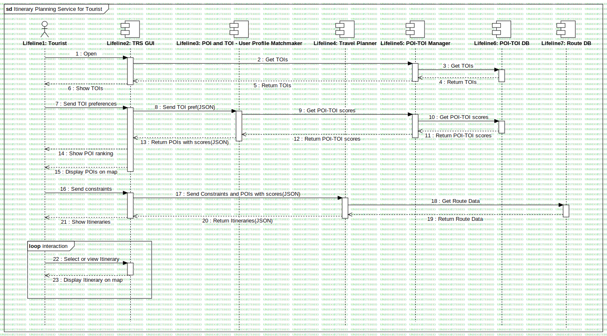

Itinerary Planning Service for Tourist
UMLInteraction
RASTA
::
Requirement Analysis
::
OR7 - Itinerari turistici in Umbria
::
Sequence - Itinerary Planning Service for Tourist
::
Itinerary Planning Service for Tourist
Description
none
Diagrams

Itinerary Planning Service for Tourist
Fragments
interaction
Participants
Lifeline2
Lifeline1: Tourist
Lifeline3: TRS GUI
Lifeline4: Travel Planner
Lifeline5: POI-TOI Manager
Lifeline6: POI-TOI DB
Lifeline7: Route DB
Lifeline8: POI-TOI Scorer
Messages
Open (Lifeline1→Lifeline3)
get TOIs (Lifeline3→Lifeline5)
get TOIs (Lifeline5→Lifeline6)
return TOIs (Lifeline6→Lifeline5)
return TOIs (Lifeline5→Lifeline3)
Show TOIs (Lifeline3→Lifeline1)
send TOI preferencies (Lifeline1→Lifeline3)
send TOI pref (Lifeline3→Lifeline8)
get POI-TOI scores (Lifeline8→Lifeline5)
get POI-TOI scores (Lifeline5→Lifeline6)
return POI-TOI scores (Lifeline5→Lifeline8)
return POI-TOI scores (Lifeline6→Lifeline5)
return POIs with scores (Lifeline8→Lifeline3)
show POI ranking (Lifeline3→Lifeline1)
display POIs on map (Lifeline3→Lifeline1)
send constraints (Lifeline1→Lifeline3)
send Constraints and POIs with scores (Lifeline3→Lifeline4)
get Route Data (Lifeline4→Lifeline7)
return Route Data (Lifeline7→Lifeline4)
return Itineraries (Lifeline4→Lifeline3)
Show Itineraries (Lifeline3→Lifeline1)
select or view Itinerary (Lifeline1→Lifeline3)
display Itinerary on map (Lifeline3→Lifeline1)
Properties
Name
Value
name
Itinerary Planning Service for Tourist
stereotype
null
visibility
public
isReentrant
true
Owned Elements
Itinerary Planning Service for Tourist